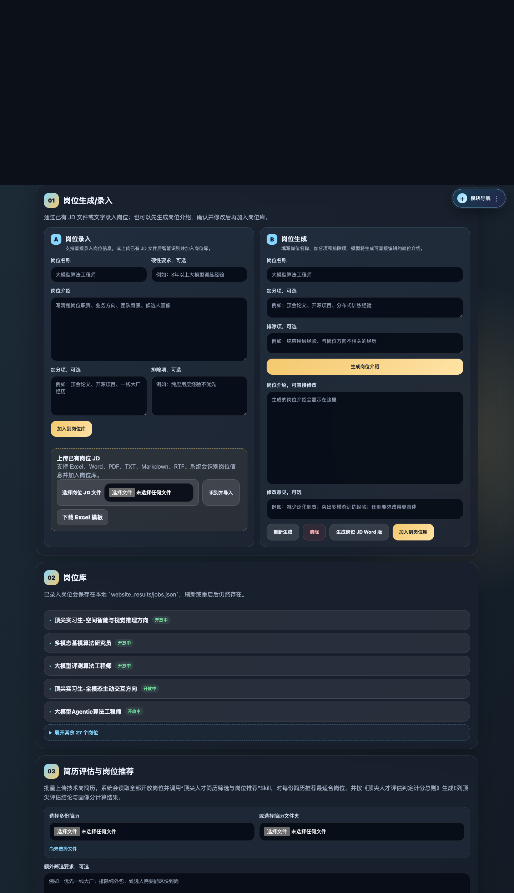
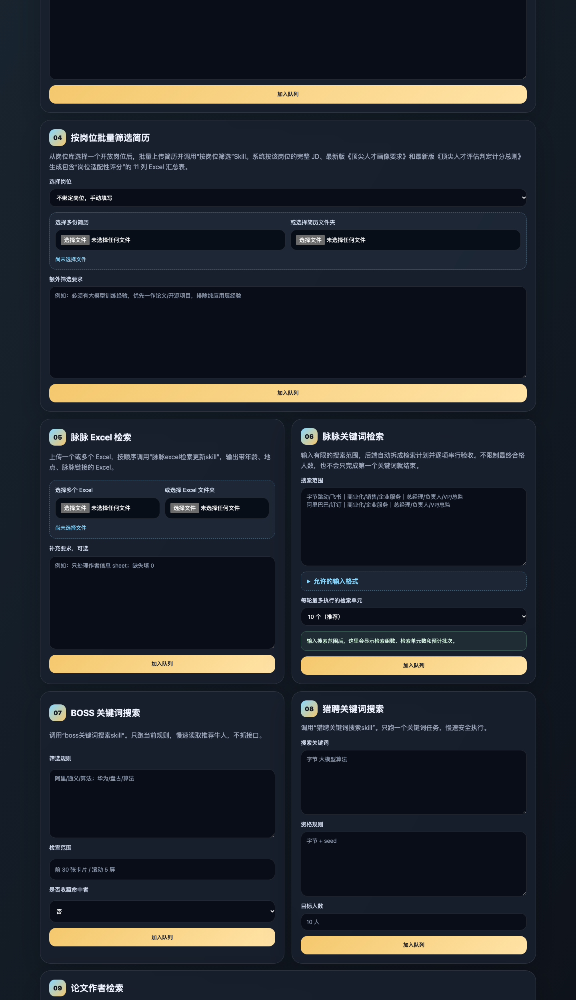

本科读计算机科学与技术，硕士在同济大学读工业工程。
独立开发了一套把招聘全链路收敛到一个浏览器页面的 本地 Agent 工作台。
我习惯把混乱的事情理出流程。本科四年当班长，最常做的事就是把一届人的通知、评奖、答辩组织得明明白白；写代码时也是同一套思路——先拆流程，再写自动化。
硕士期间我独立做了一个「人才检索本地工作台」：招聘同学原本要在脉脉、BOSS 直聘、猎聘几个网站之间反复搜同一组关键词、再手工把候选人贴回 Excel。我把整条链路做成了一个双击启动、浏览器里操作的本地工具，让不写代码的同事也能开箱即用。
目前方向：城市韧性与企业组织内智能优化协作——一边做极端高温等城市灾害下的应急资源调度优化，一边用 Agent 工具把组织内重复的协作流程自动化。
一套面向招聘团队的本地自动化工作台：把「录岗位 → 筛简历 → 多平台捞人 → 统一导出 Excel」整条链路，收敛到一个浏览器页面里完成。后端是 Python 本地服务，前端是单页 Web 界面，底层桥接大模型 Agent 自动驱动浏览器完成脉脉、BOSS 直聘、猎聘的检索动作。双击启动、解压即用，只监听本机、不对外网暴露。


Codex CLI 与 SenseAudio S2 共用同一套子进程调用逻辑，通过隔离目录切换，不污染本机登录态；密钥只写本机配置文件。
默认 5 并发；共用同一浏览器登录态的脉脉 / BOSS / 猎聘任务被约束在同一 lane 互斥执行，避免同一账号被多任务同时驱动。
7 种任务状态；服务重启时扫描结果目录自动恢复任务列表，刷新页面不丢任何进度。
任务执行时右下角浮动窗流式渲染 Agent 的每一步，下一个任务自动切换。
每个任务卡片下可随时发指令：「已登录，继续」「验证码处理好了」「只保留自研论文」，把 Agent 卡壳时的人工兜底做成一等公民。
任务完成后提交一句评价，Agent 自动根据执行日志修改对应 Skill 文档，让工具在真实任务中持续迭代。